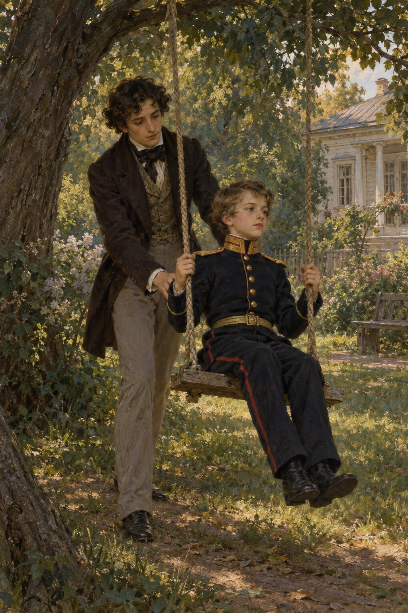

Ivan Turgenev · First Love
제18장
아침에 일어나니
머리가 아팠다.
어젯밤의 흥분은 사라졌다.
대신 무거운 의문과
처음 겪는 슬픔이 남았다.
내 안에서 무엇인가
죽어 가는 듯했다.
“뇌를 반쯤 빼낸 토끼처럼
왜 그런 눈을 하고 있습니까?”
마주친 루신이 말했다.
아침 식탁에서
나는 아버지와 어머니를
몰래 번갈아 보았다.
아버지는 늘처럼 차분했고,
어머니는 늘처럼
속으로 화를 삭이고 있었다.
아버지가 가끔 그러듯
다정하게 말을 걸어 주길
기다렸다.
하지만 평소의
차가운 애정마저
보이지 않았다.
‘지나이다에게
전부 말해 버릴까?
어차피 우리 사이는
끝난 것 같은데.’
나는 그녀를 찾아갔다.
하지만 아무것도 말하지 못했다.
제대로 이야기를 나눌 수도 없었다.
공작부인의 친아들이
방학을 맞아
상트페테르부르크에서 왔다.
열두 살쯤 된
사관학교 학생이었다.
지나이다는 동생을
바로 내게 맡겼다.
“제 사랑스러운 볼로댜예요.”
그녀가 말했다.
나를 그렇게 부른 것은
처음이었다.
“이 아이도 이름이 볼로댜예요.
친하게 지내 주세요.
아직 낯을 좀 가리지만
마음은 착해요.
네스쿠치노예도 보여 주고
함께 산책해 주세요.
잘 돌봐 주실 거죠?
당신도 참 착하잖아요.”
그녀는 다정하게
내 양어깨에 손을 얹었다.
나는 어찌할 바를 몰랐다.
소년이 오자
나까지 소년이 된 듯했다.
나는 사관학교 학생을
말없이 바라보았고,
그도 말없이
나를 바라보았다.
지나이다가 큰 소리로 웃으며
우리를 서로 밀어 붙였다.
“안아 봐요, 아이들아.”
우리는 서로 안았다.
“정원에 갈래?”
내가 소년에게 물었다.
“그러시죠.”
그가 사관학교 학생다운
쉰 목소리로 답했다.
지나이다가 또 웃었다.
그녀의 얼굴빛이
그렇게 고운 적은 없었다.
우리는 정원으로 갔다.
낡은 그네가 있었다.
소년을 얇은 널빤지에 앉히고
밀어 주었다.
두꺼운 천에
넓은 금빛 장식이 달린
새 군복을 입은 그는
꼼짝 않고 앉아
줄을 꼭 잡았다.

“옷깃은 좀 풀어.”
내가 말했다.
“괜찮습니다.
익숙합니다.”
그가 목을 가다듬었다.
소년은 누나를 닮았다.
특히 눈이 그랬다.
그를 돌봐 주는 게 좋으면서도
가슴에서는 같은 슬픔이
조용히 나를 갉아먹었다.
‘이제 나는
정말 어린아이야.
그런데 어젯밤에는….’
어제 칼을 떨어뜨린 자리가
떠올랐다.
가서 칼을 찾았다.
소년이 달라고 했다.
그는 굵은 풀줄기를 꺾어
칼로 피리를 만들고
불기 시작했다.
오셀로도 따라 휘파람을 불었다.
하지만 그날 저녁,
지나이다의 품에 안긴
그 오셀로는
얼마나 울었던가.
그녀는 정원 구석에서
나를 찾아
왜 그리 슬프냐고 물었다.
눈물이 갑자기 쏟아져
그녀가 놀랄 정도였다.
“왜 그래요, 볼로댜?
무슨 일이에요?”
그녀가 거듭 물었다.
내가 대답도 못 하고
울기만 하자
젖은 뺨에
입을 맞추려 했다.
나는 얼굴을 돌리고
울음 사이로 속삭였다.
“다 알아요.
왜 저를 갖고 노셨어요?
제 사랑이 왜 필요했어요?”
“내가 잘못했어요, 볼로댜.
정말 많이 잘못했어요.”
지나이다는
두 손을 꼭 쥐었다.
“내 안에는
나쁘고 어둡고
죄 많은 것이 너무 많아요.
하지만 지금은
당신을 갖고 노는 게 아니에요.
나도 당신을 사랑해요.
왜, 어떻게 사랑하는지
당신은 짐작도 못 할 거예요.
그런데 대체 무엇을 안다는 거죠?”
내가 무슨 말을
할 수 있었겠는가.
지나이다가 내 앞에서
나를 바라보았다.
그 눈길 하나에
나는 머리끝부터 발끝까지
온전히 그녀의 것이 되었다.
십오 분 뒤에는
그녀와 동생을 따라
달리기 시합을 했다.
더는 울지 않고
웃었다.
부은 눈꺼풀 때문에
웃을 때도 눈물이 흘렀다.
목에는 넥타이 대신
지나이다의 리본을 둘렀다.
그녀의 허리를 붙잡았을 때
나는 기뻐서 소리쳤다.
지나이다는 나를
마음대로 할 수 있었다.